26. Notifications
A Notification Template is an instance of a Notification type (Email, Slack, Webhook, etc.) with a name, description, and a defined configuration.
For example:
A username, password, server, and recipients are needed for an Email notification template
The token and a list of channels are needed for a Slack notification template
The URL and Headers are needed for a Webhook notification template
A Notification is a manifestation of the notification template; for example, when a job fails, a notification is sent using the configuration defined by the notification template.
At a high level, the typical flow for the notification system works as follows:
A user creates a notification template to the REST API at the
/api/controller/v2/notification_templatesendpoint (either through the API or through the UI).A user assigns the notification template to any of the various objects that support it (all variants of job templates as well as organizations and projects) and at the appropriate trigger level for which they want the notification (started, success or error). For example a user may wish to assign a particular notification template to trigger when Job Template 1 fails. In which case, they will associate the notification template with the job template at
/api/controller/v2/job_templates/n/notification_templates_errorAPI endpoint.You can set notifications on job start, not just job end. Users and teams are also able to define their own notifications that can be attached to arbitrary jobs.
26.1. Notification Hierarchy
Notification templates assigned at certain levels will inherit templates defined on parent objects as such:
Jobs will use the notifiers enabled on their job template, and inherit the ones of the project used by the job template and of the organization of the job template.
Project updates will use the notifiers enabled on the project, and inherit the ones of the organization of the project.
Inventory updates will use the notifiers enabled on their inventory source, and inherit the ones of the organization of the inventory.
Workflow jobs will use the notifiers enabled on their workflow job template, and inherit the ones of its organization, including the approval notifications.
Ad hoc commands will use the notifiers of the organization of the inventory.
26.2. Workflow
When a job succeeds or fails, the error or success handler will pull a list of relevant notification templates using the procedure defined above. It will then create a Notification object for each one containing relevant details about the job and then sends it to the destination (email addresses, slack channel(s), sms numbers, etc). These Notification objects are available as related resources on job types (jobs, inventory updates, project updates), and also at /api/controller/v2/notifications. You may also see what notifications have been sent from a notification templates by examining its related resources.
If a notification fails, it will not impact the job associated to it or cause it to fail. The status of the notification can be viewed at its detail endpoint (/api/controller/v2/notifications/<n>).
26.3. Create a Notification Template
To create a Notification Template:
Open Automation Execution > Administration > Notifiers. The list shows the notifiers, with the status of their last notification, their type and organization; the actions of each row edit, test (Test notifier, bell icon), duplicate or delete them.
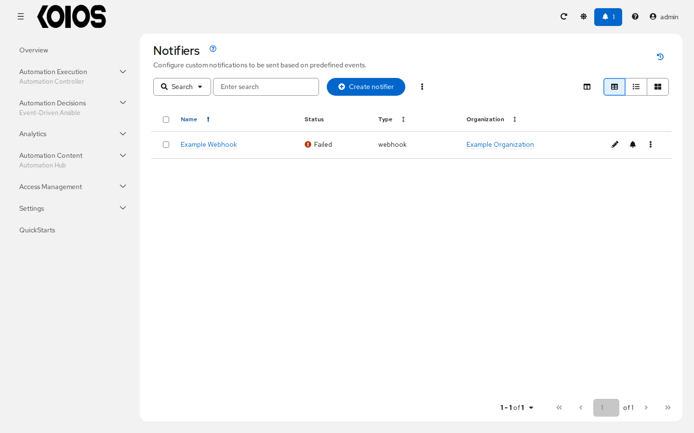
Click Create notifier.
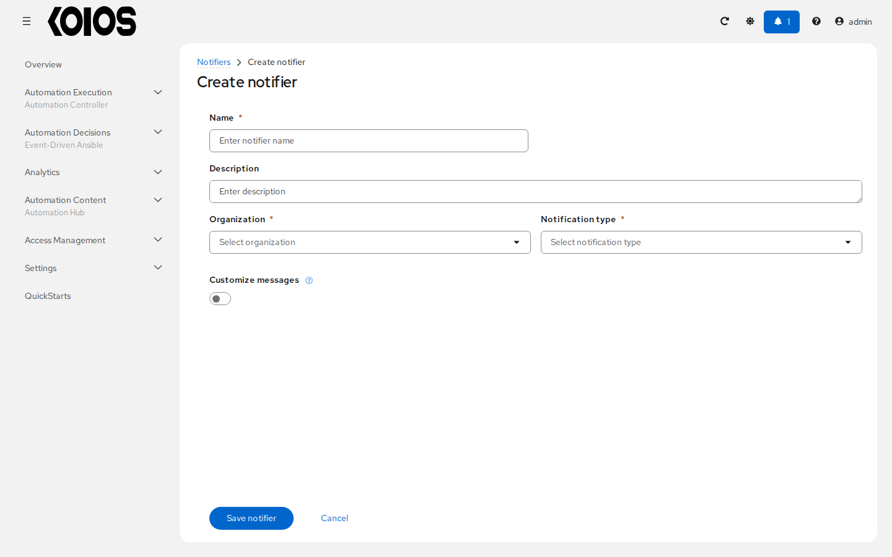
Enter the Name of the notifier and a Description, and select the Organization (required) it belongs to.
Choose the Notification type. The Type Details section shows the fields of that type; refer to the subsequent sections for additional information.
Optionally turn on Customize messages; see Create custom notifications.
Once all required information is complete, click Save notifier. Use Test notifier to send a test notification; the result shows in the Status of the notifier.
A notifier has Details, Team Access and User Access tabs; the access tabs give roles on the notifier to users and teams.
26.4. Notification Types
Notification types supported with automation controller:
Each of these have their own configuration and behavioral semantics and testing them may need to be approached in different ways. Additionally, you can customize each type of notification down to a specific detail, or a set of criteria to trigger a notification. See Create custom notifications for more detail on configuring custom notifications. The following sections will give as much detail as possible on each type of notification.
26.4.1. AWS SNS
The AWS SNS notification type supports sending messages into an SNS topic. The Notification type list of the user interface does not offer it: create these notifiers with the API (notification_type: awssns) or the awx.awx collection.
You must provide the following details to setup a SNS notification:
AWS Region
AWS Access Key ID
AWS Secret Access Key
AWS SNS Topic ARN
26.4.2. Email
The email notification type supports a wide variety of SMTP servers and has support for TLS/SSL connections.
You must provide the following details to setup an email notification:
Host
Recipient list (one address per line)
Sender email
Port
Timeout (in seconds): allows you to specify up to 120 seconds, the length of time automation controller may attempt connecting to the email server before giving up.
Optionally, a Username and Password for the SMTP server, and the Use TLS or Use SSL options for an encrypted connection.
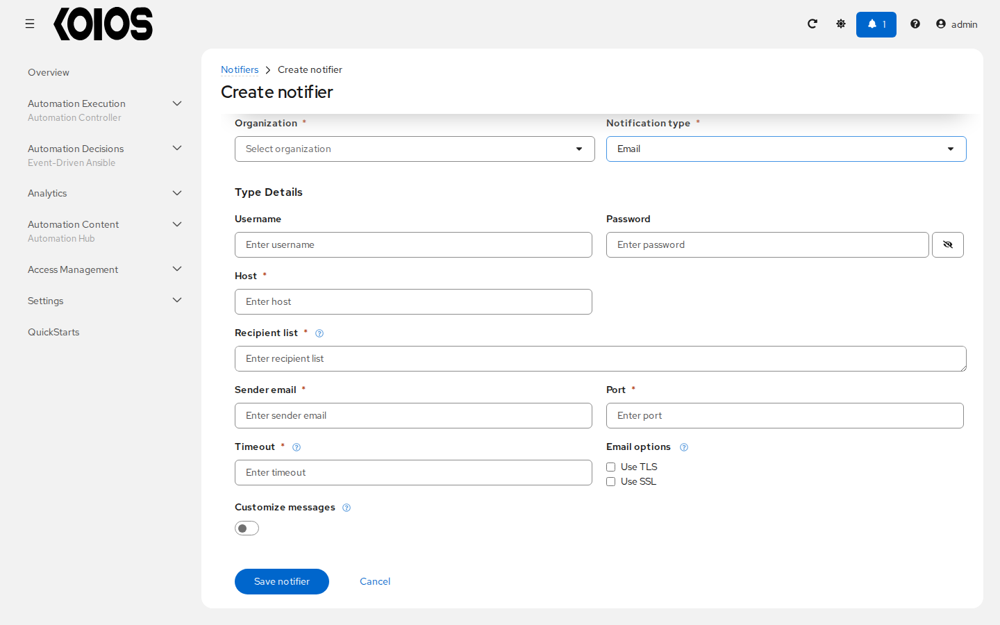
26.4.3. Grafana
Grafana is a fairly straightforward integration. First, create an API Key in the Grafana system (this is the token that is given to automation controller).
You must provide the following details to setup a Grafana notification:
Grafana URL: The URL of the Grafana API service, generally
http://yourcompany.grafana.com.Grafana API Key: The user must first create an API Key in the Grafana system (this is the token that is given to automation controller).
The other options of note are:
ID of the Dashboard: When you created an API Key for the Grafana account, you can set up a dashboard with its own unique ID.
ID of the Panel: If you added panels and graphs to your Grafana interface, you can specify its ID here.
Tags for the Annotation: Enter keywords that help identify the type(s) of events(s) of the notification you are configuring.
Disable SSL Verification: turns off verification of the target’s certificate, so the controller can no longer tell the real server from an impostor, and the notification and its credentials can be exposed. For a server whose certificate comes from a private CA, trust that CA instead with
bundle_cacert_secretin theKoiosPlatform(see KoiosPlatform); use this option only as a temporary diagnosis.
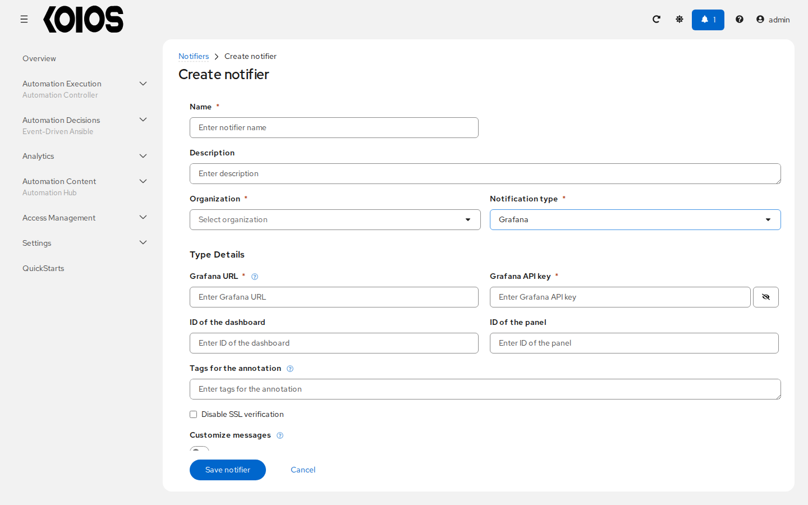
26.4.4. IRC
The IRC notification takes the form of an IRC bot that will connect, deliver its messages to channel(s) or individual user(s), and then disconnect. The notification bot also supports SSL authentication. The bot does not currently support Nickserv identification. If a channel or user does not exist or is not on-line then the Notification will not fail; the failure scenario is reserved specifically for connectivity.
Connectivity information is straightforward:
IRC Server Password (optional): IRC servers can require a password to connect. If the server does not require one, leave blank
IRC Server Port: The IRC server Port
IRC Server Address: The host name or address of the IRC server
IRC Nick: The bot’s nickname once it connects to the server
Destination Channels or Users: A list of users and/or channels to which to send the notification.
Use SSL (optional): Should the bot use SSL when connecting to the IRC server. Check it to connect with SSL.
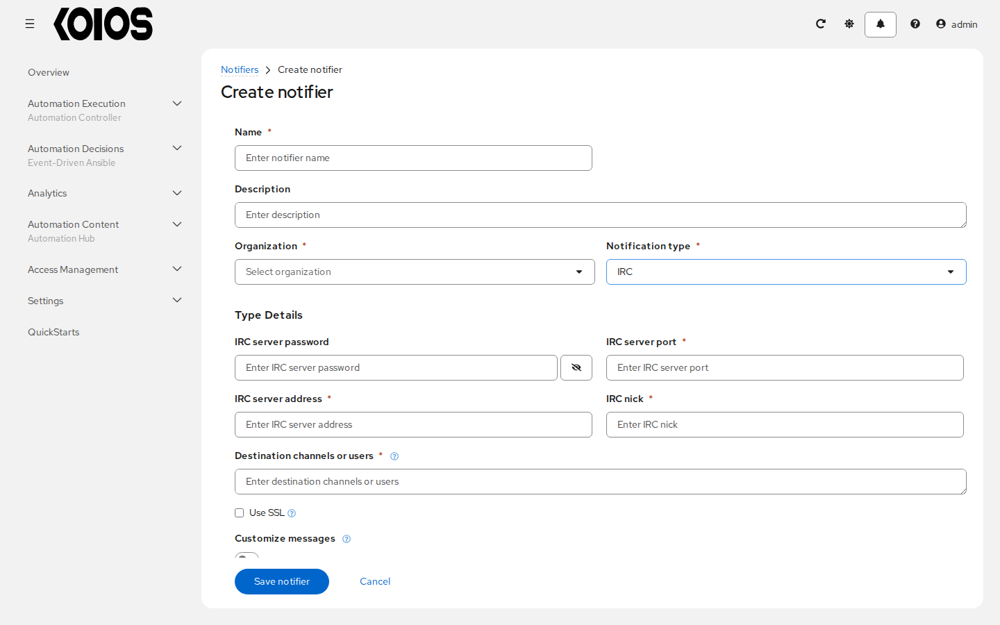
26.4.5. Mattermost
The Mattermost notification type provides a simple interface to Mattermost’s messaging and collaboration workspace. The parameters that can be specified are:
Target URL (required): The full URL that will be POSTed to
Username
Channel
Icon URL: specifies the icon to display for this notification
Disable SSL verification: checking this option disables the verification of the target’s certificate (
mattermost_no_verify_ssl), so the controller can no longer tell the real server from an impostor, and the notification can be exposed. Leave it unchecked. For a server whose certificate comes from a private CA, trust that CA instead withbundle_cacert_secretin theKoiosPlatform(see KoiosPlatform); check it only as a temporary diagnosis.
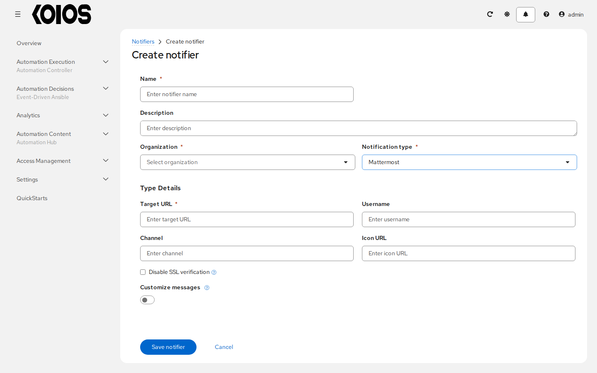
26.4.6. PagerDuty
PagerDuty is a fairly straightforward integration. First, create an API Key in the PagerDuty system (this is the token that is given to automation controller) and then create a “Service” which provides an “Integration Key” that will also be given to automation controller. The other required options are:
API Token: The user must first create an API Key in the PagerDuty system (this is the token that is given to automation controller).
PagerDuty Subdomain: When you sign up for the PagerDuty account, you receive a unique subdomain to communicate with. For instance, if you signed up as “testuser”, the web dashboard will be at
testuser.pagerduty.comand you will give the APItestuseras the subdomain (not the full domain).API Service/Integration Key
Client Identifier: This will be sent along with the alert content to the pagerduty service to help identify the service that is using the api key/service. This is helpful if multiple integrations are using the same API key and service.
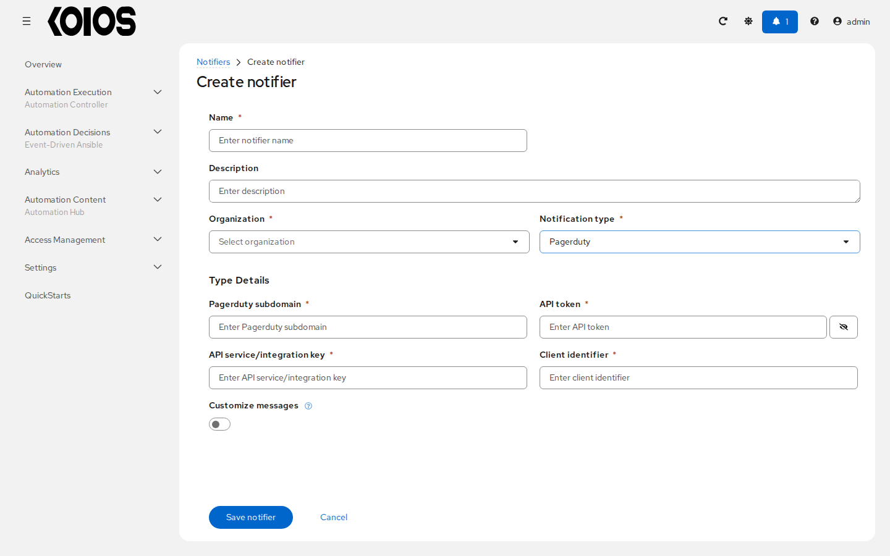
26.4.7. Rocket.Chat
The Rocket.Chat notification type provides an interface to Rocket.Chat’s collaboration and communication platform. The parameters that can be specified are:
Target URL (required): The full URL that will be POSTed to
Username
Icon URL: specifies the icon to display for this notification
Disable SSL Verification: turns off verification of the target’s certificate, so the controller can no longer tell the real server from an impostor, and the notification and its credentials can be exposed. For a server whose certificate comes from a private CA, trust that CA instead with
bundle_cacert_secretin theKoiosPlatform(see KoiosPlatform); use this option only as a temporary diagnosis.
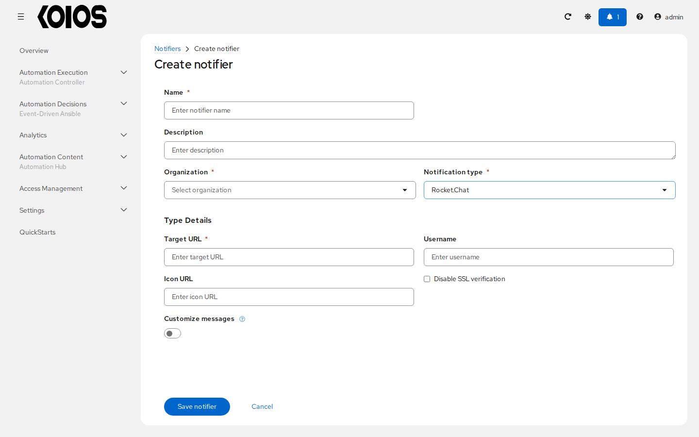
26.4.8. Slack
Slack, a collaborative team communication and messaging tool, is pretty easy to configure.
You must supply the following to setup Slack notifications:
A Slack app (refer to the Basic App Setup page of the Slack documentation for information on how to create one)
A token (refer to Enabling Interactions with Bots and specific details on bot tokens on the Token Types documentation page)
The destination channels, one per line, and optionally a notification color
Once you have a bot/app set up, you must navigate to “Your Apps”, click on the newly-created app and then go to Add features and functionality, which allows you to configure incoming webhooks, bots, and permissions; as well as Install your app to your workspace.
You must also invite the notification bot to join the channel(s) in question in Slack. Note that private messages are not supported.
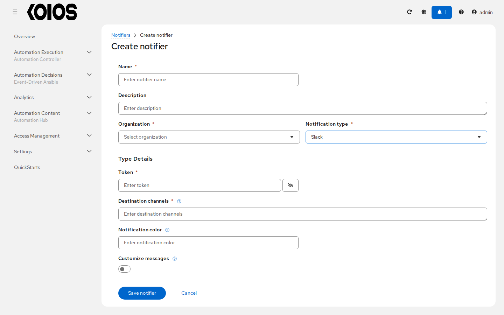
26.4.9. Twilio
Twilio service is an Voice and SMS automation service. Once you are signed in, you must create a phone number from which the message will be sent. You can then define a “Messaging Service” under Programmable SMS and associate the number you created before with it.
Note that you may need to verify this number or some other information before you are allowed to use it to send to any numbers. The Messaging Service does not need a status callback URL nor does it need the ability to Process inbound messages.
Under your individual (or sub) account settings, you will have API credentials. Twilio uses two credentials to determine which account an API request is coming from. The “Account SID”, which acts as a username, and the “Auth Token” which acts as a password.
To setup Twilio, provide the following details:
Account Token
Source Phone Number (this is the number associated with the messaging service above and must be given in the form of “+15556667777”)
Destination SMS numbers (one per line, in international format with
+and the country code, for example+15556667777)Account SID
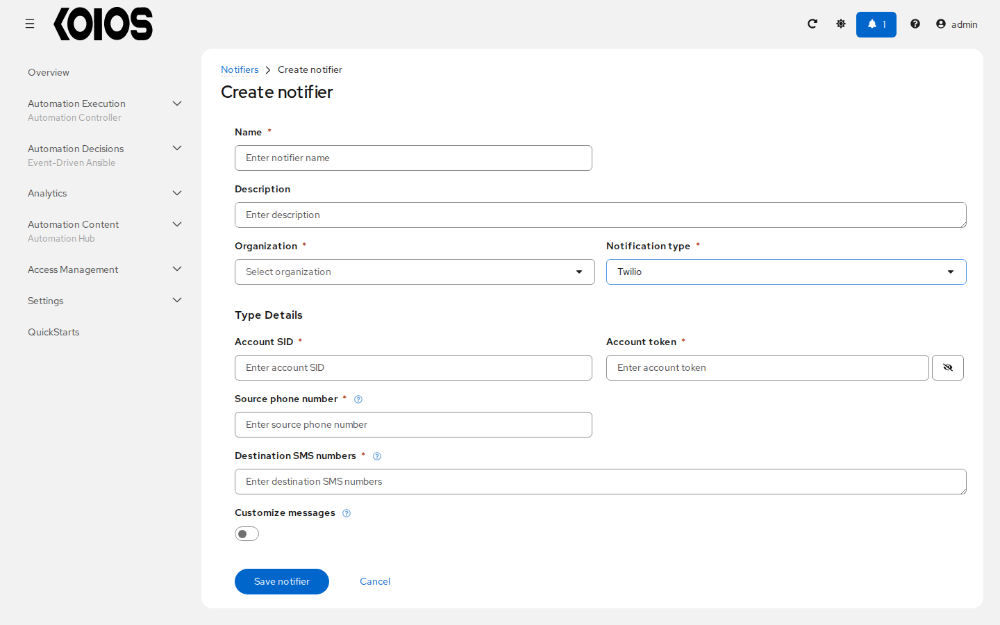
26.4.10. Webhook
The webhook notification type provides a simple interface to sending POSTs to a predefined web service. Automation controller will POST to this address using application/json content type with the data payload containing all relevant details in json format. Some web service APIs expect HTTP requests to be in a certain format with certain fields. You can configure more of the webhook notification in the following ways:
configure the HTTP method (using POST or PUT)
body of the outgoing request
configure authentication (using basic auth)
The parameters for configuring webhooks are:
Username
Basic Auth Password
Target URL (required): The full URL to which the webhook notification will be PUT or POSTed.
Disable SSL Verification: turns off verification of the target’s certificate, so the controller can no longer tell the real server from an impostor, and the notification and its credentials can be exposed. For a server whose certificate comes from a private CA, trust that CA instead with
bundle_cacert_secretin theKoiosPlatform(see KoiosPlatform); use this option only as a temporary diagnosis.HTTP headers: Headers in YAML or JSON form where the keys and values are strings. For example,
{"Authentication": "<token>", "MessageType": "Test"}HTTP Method (required). Select the method for your webhook:
POST: Creates a new resource. Also acts as a catch-all for operations that do not fit into the other categories. It is likely you need to POST unless you know your webhook service expects a PUT.
PUT: Updates a specific resource (by an identifier) or a collection of resources. PUT can also be used to create a specific resource if the resource identifier is known beforehand.
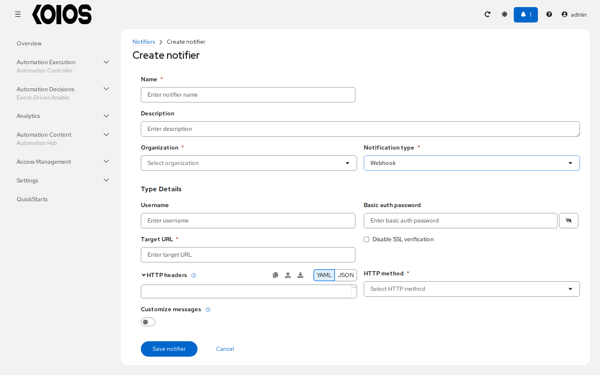
26.4.10.1. Webhook payloads
Automation controller sends by default the following data at the webhook endpoint:
job id
name
url
created_by
started
finished
status
traceback
inventory
project
playbook
credential
limit
extra_vars
hosts
An example of a started notifications via webhook message as it is returned by automation controller:
{"id": 38, "name": "Demo Job Template", "url": "https://host/execution/jobs/playbook/38", "created_by": "bianca", "started":
"2020-07-28T19:57:07.888193+00:00", "finished": null, "status": "running", "traceback": "", "inventory": "Demo Inventory",
"project": "Demo Project", "playbook": "hello_world.yml", "credential": "Demo Credential", "limit": "", "extra_vars": "{}",
"hosts": {}}
Automation controller returns by default the following data at the webhook endpoint for a success/fail status:
job id
name
url
created_by
started
finished
status
traceback
inventory
project
playbook
credential
limit
extra_vars
hosts
An example of a success/fail notifications via webhook message as it is returned by automation controller:
{"id": 46, "name": "automation controller-Collection-tests-awx_job_wait-long_running-XVFBGRSAvUUIrYKn", "url": "https://host/execution/jobs/playbook/46",
"created_by": "bianca", "started": "2020-07-28T20:43:36.966686+00:00", "finished": "2020-07-28T20:43:44.936072+00:00", "status": "failed",
"traceback": "", "inventory": "Demo Inventory", "project": "automation controller-Collection-tests-awx_job_wait-long_running-JJSlglnwtsRJyQmw", "playbook":
"fail.yml", "credential": null, "limit": "", "extra_vars": "{\"sleep_interval\": 300}", "hosts": {"localhost": {"failed": true, "changed": 0,
"dark": 0, "failures": 1, "ok": 1, "processed": 1, "skipped": 0, "rescued": 0, "ignored": 0}}}
26.5. Create custom notifications
You can customize the text content of each of the Notification Types by turning on Customize messages at the bottom of the notifier form.
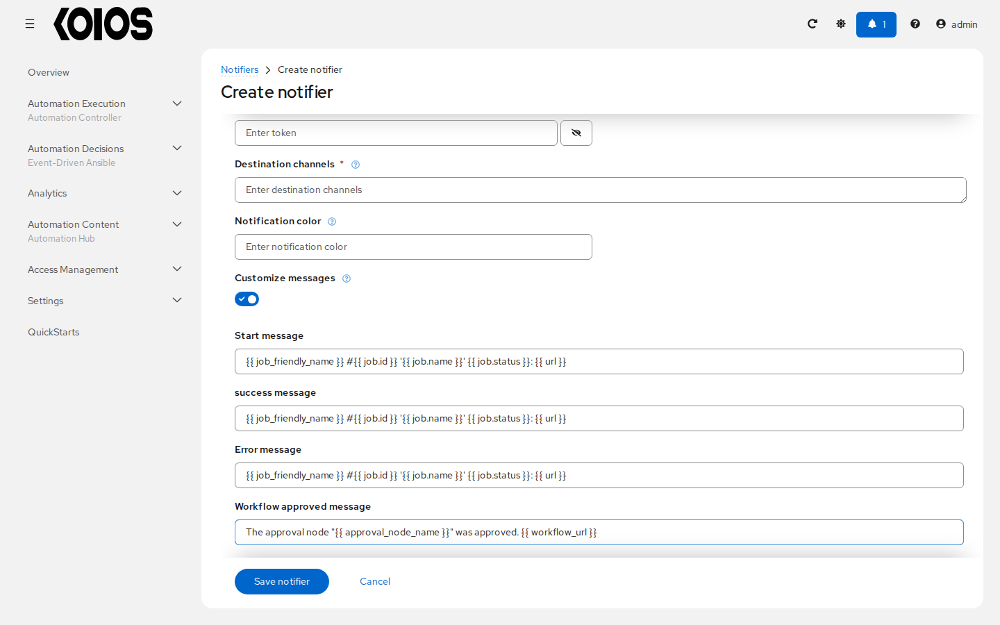
You can provide a custom message for various job events:
Start
Success
Error
Workflow approved
Workflow denied
Workflow running
Workflow timed out
The message forms vary depending on the type of notification you are configuring. In the form, email and PagerDuty notifications have a message (the subject) and a message body for each event, webhook notifications only a message body, and the other notification types only a message for each type of event. In the API, Grafana notifiers also have a body, and AWS SNS notifiers only a body.
The message fields are pre-populated with a template containing a top-level variable, job coupled with an attribute, such as id or name, for example. Templates are enclosed in curly braces and may draw from a fixed set of fields provided by automation controller, as shown in the pre-populated fields.
This pre-populated field suggests commonly displayed messages to a recipient who is notified of an event. You can, however, customize these messages with different criteria by adding your own attribute(s) for the job as needed. Custom notification messages are rendered using Jinja - the same templating engine used by Ansible playbooks.
Messages and message bodies have different types of content:
messages will always just be strings (one-liners only; new lines are not allowed)
message bodies will be either a dictionary or block of text:
the message body for Webhooks and PagerDuty uses dictionary definitions. The default message body for these is
{{ job_metadata }}, you can either leave that as is or provide your own dictionarythe message body for email uses a block of text or a multi-line string. The default message body is:
{{ job_friendly_name }} #{{ job.id }} had status {{ job.status }}, view details at {{ url }} {{ job_metadata }}You can tweak this text (leaving
{{ job_metadata }}in, or drop{{ job_metadata }}altogether). Since the body is a block of text, it can really be any string you want.{{ job_metadata }}gets rendered as a dictionary containing fields that describe the job being executed. In all cases,{{ job_metadata }}will include the following fields:idnameurlcreated_bystartedfinishedstatustraceback
Note
At the present time, you cannot query individual fields within
{{ job_metadata }}. When using{{ job_metadata }}in a notification template, all data will be returned.The resulting dictionary will look something like this:
{"id": 18, "name": "Project - Space Procedures", "url": "https://host/execution/jobs/project/18", "created_by": "admin", "started": "2019-10-26T00:20:45.139356+00:00", "finished": "2019-10-26T00:20:55.769713+00:00", "status": "successful", "traceback": "" }
If
{{ job_metadata }}is rendered in a job, it will include the following additional fields:inventoryprojectplaybookcredentiallimitextra_varshosts
The resulting dictionary will look something like:
{"id": 12, "name": "JobTemplate - Launch Rockets", "url": "https://host/execution/jobs/playbook/12", "created_by": "admin", "started": "2019-10-26T00:02:07.943774+00:00", "finished": null, "status": "running", "traceback": "", "inventory": "Inventory - Fleet", "project": "Project - Space Procedures", "playbook": "launch.yml", "credential": "Credential - Mission Control", "limit": "", "extra_vars": "{}", "hosts": {} }
If
{{ job_metadata }}is rendered in a workflow job, it will include the following additional field:body(this will enumerate all the nodes in the workflow job and includes a description of the job associated with each node)
The resulting dictionary will look something like this:
{"id": 14, "name": "Workflow Job Template - Launch Mars Mission", "url": "https://host/execution/jobs/workflow/14", "created_by": "admin", "started": "2019-10-26T00:11:04.554468+00:00", "finished": "2019-10-26T00:11:24.249899+00:00", "status": "successful", "traceback": "", "body": "Workflow job summary: node #1 spawns job #15, \"Assemble Fleet JT\", which finished with status successful. node #2 spawns job #16, \"Mission Start approval node\", which finished with status successful.\n node #3 spawns job #17, \"Deploy Fleet\", which finished with status successful." }
For more detail, refer to Using variables with Jinja2.
Automation controller requires valid syntax in order to retrieve the correct data to display the messages. For a list of supported attributes and the proper syntax construction, refer to the Supported Attributes for Custom Notifications section of this guide.
If you create a notification template that uses invalid syntax or references unusable fields, an error message displays indicating the nature of the error. If you delete a notification’s custom message, the default message is shown in its place.
Note
If you save the notifier without editing the custom messages (or edit and revert back to the default values), its Details tab shows no messages. If you edit and save any of the values, the messages display in the Details tab.
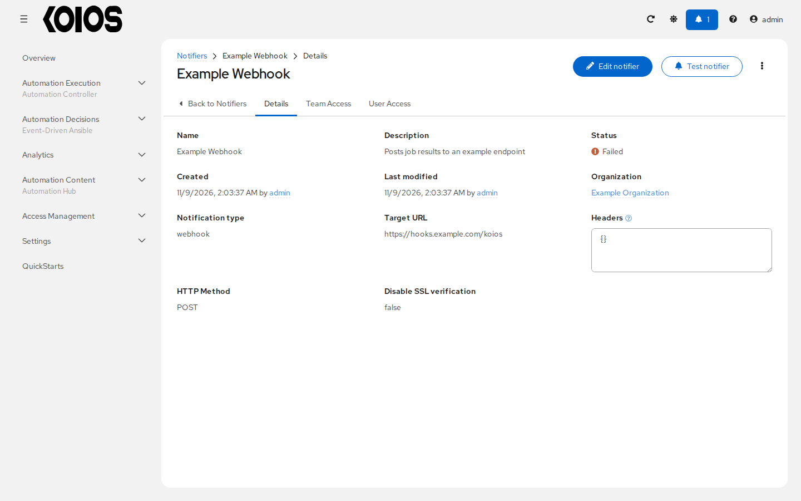
26.6. Enable and Disable Notifications
You can select which notifications to notify you when a specific job starts, in addition to notifying you on success or failure at the end of the job run. Some behaviors to keep in mind:
if a workflow template (WFJT) has notification on start enabled, and a job template (JT) within that workflow also has notification on start enabled, you will receive notifications for both
you can enable notifications to run on many JTs within a WFJT
you can enable notifications to run on a sliced job template (SJT) start and each slice will generate a notification
when you enable a notification to run on job start, and that notification gets deleted, the JT continues to run, but will result in an error message
You can enable notifications on job start, job success, and job failure, or any combination thereof, from the Notifications tab of the following resources:
Job Templates
Workflow Job Templates
Projects (shown in the example below)
Inventory Sources
Organizations (in Access Management > Organizations; the notifiers enabled there, including the Approval ones, apply to the jobs of the organization, see Notification Hierarchy)

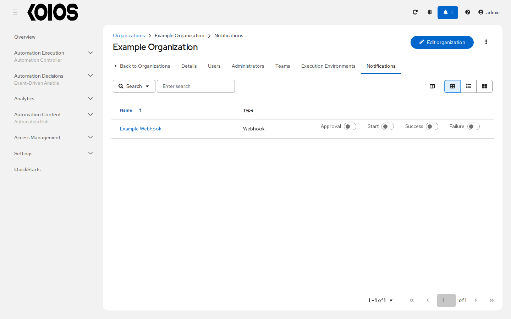
For workflow templates that have approval nodes, in addition to Start, Success, and Failure, you can enable or disable certain approval-related events:

Refer to Approval nodes for additional detail on working with these types of nodes.
26.7. Configure the host hostname for notifications
The links in notifications use the Base URL of the service (TOWER_URL_BASE) of automation controller, in Settings > Automation Execution > System (see System Settings). In Koios Automation Platform its default value is https://platformhost: set it to the public address of the platform, which is in status.URL of the KoiosPlatform (see Configure the platform). Click Edit to change it.

26.7.1. Reset the TOWER_URL_BASE
If notifications show a wrong address, set Base URL of the service (TOWER_URL_BASE) in the controller’s System settings to the address you wish to appear in notifications. If the setting is declared in spec.controller.extra_settings of the KoiosPlatform, it is read-only in the user interface; change it there (see Deployment-managed settings).
26.8. Notifications API
Use the started, success, or error endpoints:
/api/controller/v2/organizations/N/notification_templates_started/
/api/controller/v2/organizations/N/notification_templates_success/
/api/controller/v2/organizations/N/notification_templates_error/
Additionally, the ../../../N/notification_templates_started endpoints have GET and POST actions for:
Organizations
Projects
Inventory Sources
Job Templates
System Job Templates
Workflow Job Templates
Organizations and workflow job templates also have notification_templates_approvals endpoints, with GET and POST actions, for the approval notifications:
/api/controller/v2/organizations/N/notification_templates_approvals/
/api/controller/v2/workflow_job_templates/N/notification_templates_approvals/